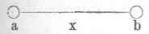

Kant: AA XIV, Physik und Chemie. , Seite 437 |
|||||||
Zeile:
|
Text:
|
|
|
||||
| 01 | feste Theile in Dichtigkeit unendlich sind, so werden sie durch diesen Stoß | ||||||
| 02 | des aethers nicht in Bewegung gebracht; also, da sie in der Geraden Linie | ||||||
| 03 |  von a nach b und vice versa gedrukt werden, in x aber der |
||||||
| 04 | Gegendruk, welcher continuirlich ist (denn ienes sind augenblikliche Wirkungen), | ||||||
| 05 | stärker ist: so werden sie dadurch zusammengedrükt, bis sie durch | ||||||
| 06 | eigenthümliche elasticität einander erreichen. Daselbst werden sie nun | ||||||
| 07 | eben so wohl erschüttert*, bis sie so nahe seyn, daß die Erschütterung dem | ||||||
| 08 | äußeren Druke gleich ist. Also werden sie und bleiben auch zusammen | ||||||
| 09 | gedrükt. | ||||||
| 11 | * (g Denn bey den zitterungen, die sich von dem Anstoß einer subtilen | ||||||
| 12 | Materie vergroßern sollen, muß ein wiederhalt seyn, d. i. zweene | ||||||
| 13 | Theile, die ihre oscillationen wechselseitig coordiniren und immer neuen | ||||||
| 14 | Eindruk annehmen. Das frieren ist Geschwind. Denn die zitterungen | ||||||
| 15 | lassen sich leicht hemmen, aber nicht so leicht, sondern langsam bis ins | ||||||
| 16 | innerste fortsetzen (aufthaün). ) | ||||||
| [ Seite 436 ] [ Seite 439 ] [ Inhaltsverzeichnis ] |
|||||||
;){kind=link}